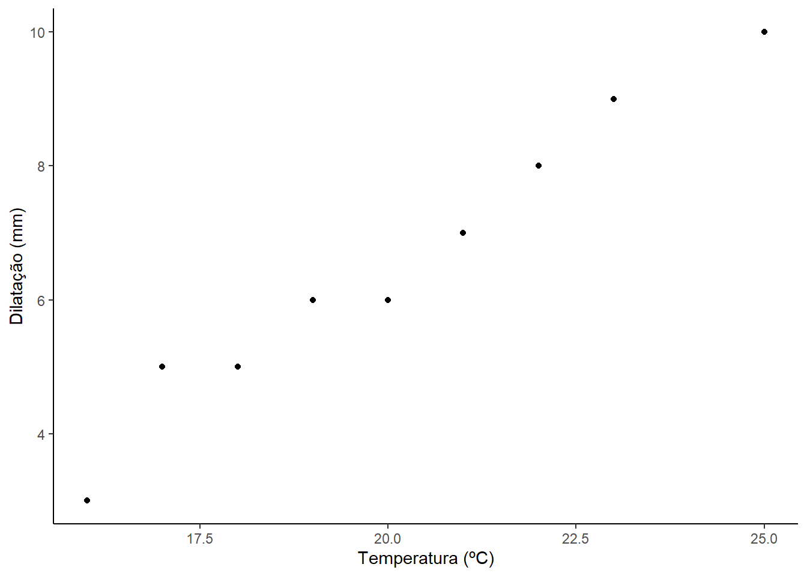
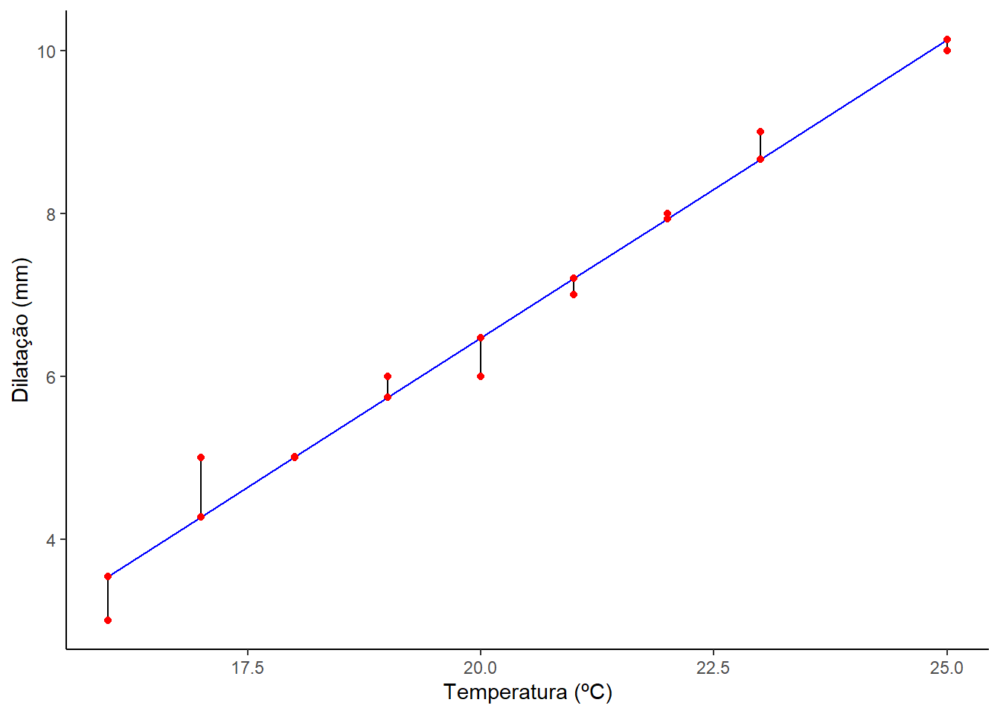
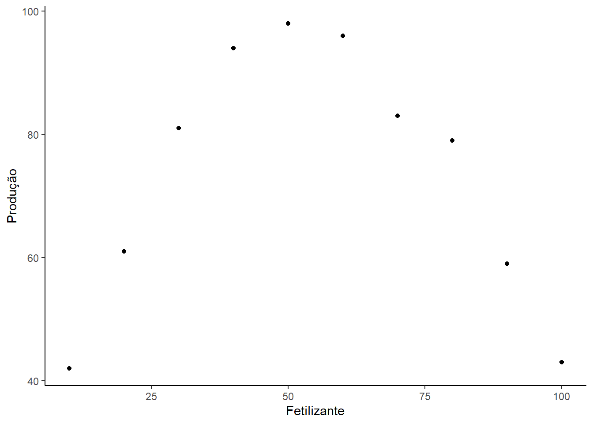
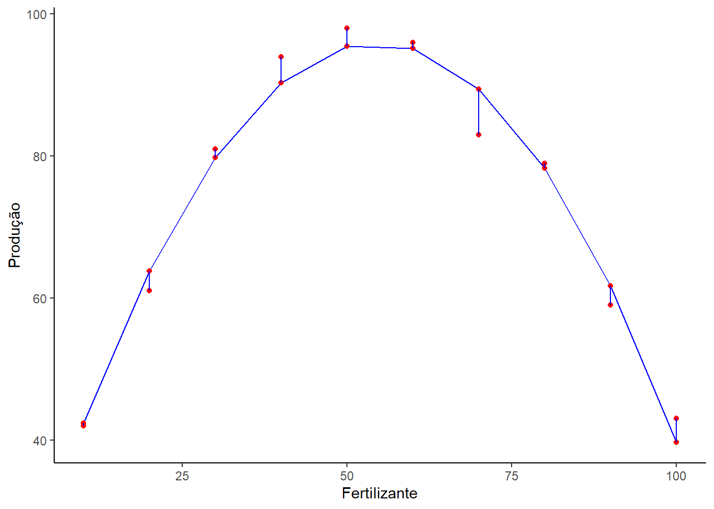
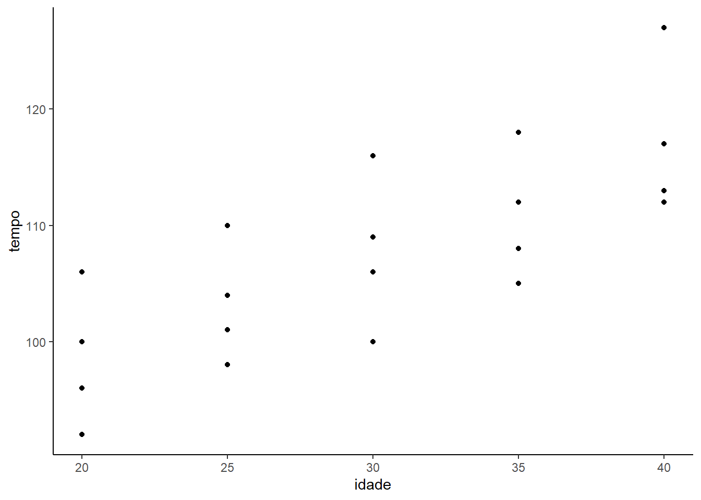
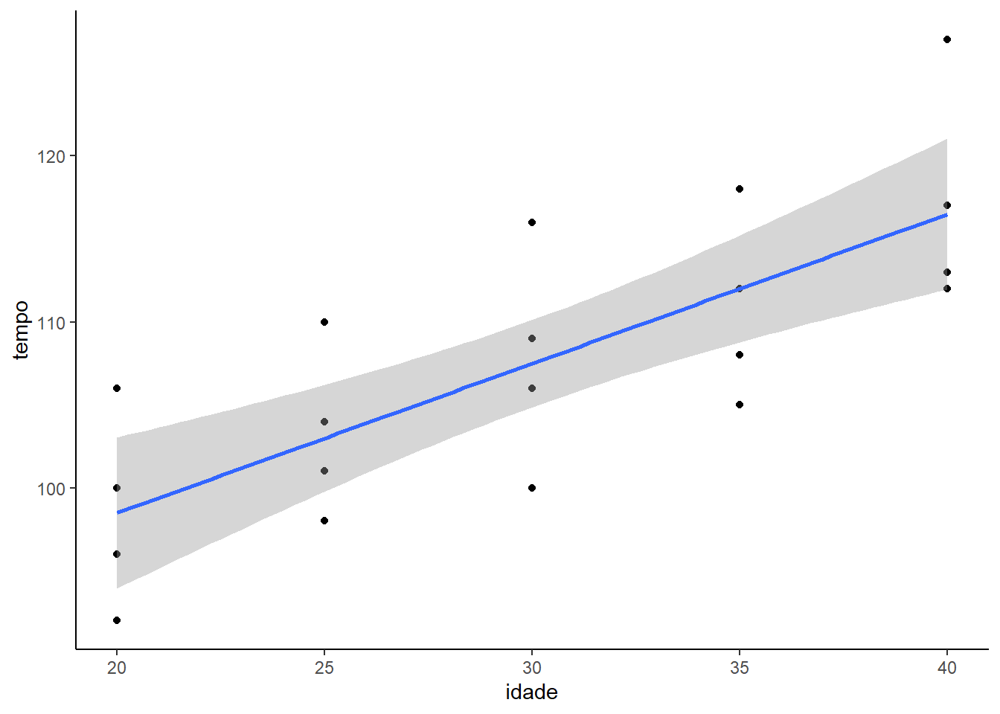
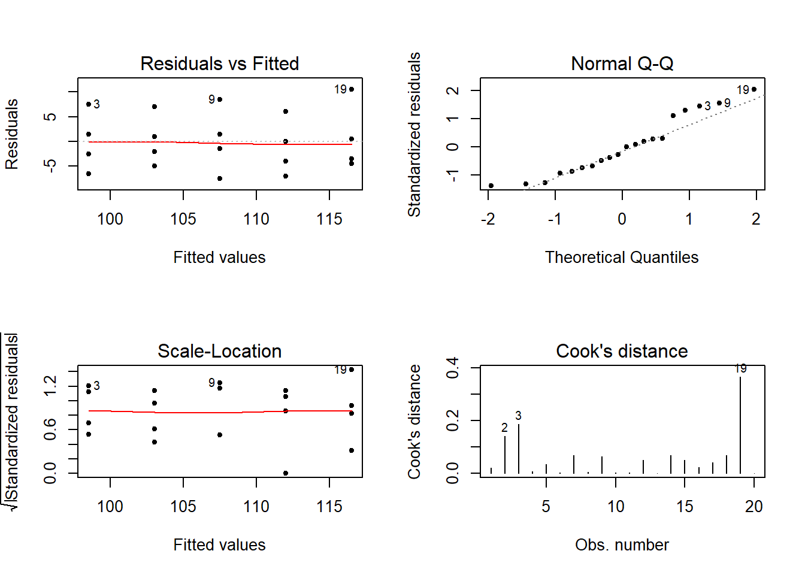

Capítulo 3 Regressão Linear Simples no R
Em uma regressão linear simples a variável dependente Y é explicada por uma variável independente X.
Caso o diagrama de dispersão X e Y apresente pontos dispostos em torno de uma linha reta, existe uma evidência de uma relação linear entre as variáveis analisadas.
O exemplos I e II são adaptaçãos dos apresentados em (Melo and Peternelli 2013 , pp. 190-200)
3.1 Exemplo 1
Um engeinheiro civil coleta dados em laborátorio, a fim de estudar a dilatação de um pilar de concreto segundo a temperatura ambiente no local onde se encontra o pilar. São os dados:
| Temperatura (ºC) | Dilatação (mm) |
|---|---|
| 18 | 5 |
| 16 | 3 |
| 25 | 10 |
| 22 | 8 |
| 20 | 6 |
| 22 | 7 |
| 23 | 9 |
| 19 | 6 |
| 17 | 5 |
Algumas perguntas são comuns:
Posso realizar um estudo de regressão?
Qual o modelo usar?
Qual a equação que relaciona a dilatação e a temperatura?
A temperatura realmente exerce influencia na dilatação do pilar?
E possível quantificar essa relação?
As respostas procuradas podem ser encontradas realizando-se uma análise de regressão.
Primeiro é criado um data frame com os dados de dilatação e temperatura.
temp <- c(18,16,25,22,20,21,23,19,17)
dilat <- c(5,3,10,8,6,7,9,6,5)
dados <- data.frame (dilat, temp)Inicialmente, o estudo de regressão pode ser feito com a escolha do modelo. Para auxiliar na escolha deste, visualizaremos os pontos em um gráfico de dispersão:
library(ggplot2)
ggplot(dados, aes(x=temp, y=dilat)) +
geom_point()+
labs(x="Temperatura (ºC)",
y="Dilatação (mm)")+
theme_classic()
O diagrama sugere uma tendência linear dos dados. Montaremos, portanto, um modelo de regressão linear simples, pois existe apenas uma variável independente temp relaciada à variável dependente dilat. Montando o modelo:
##
## Call:
## lm(formula = dilat ~ temp, data = dados)
##
## Coefficients:
## (Intercept) temp
## -8.1710 0.7323O modelo retorna duas informações:
O valor do intercepto; e
o valor do coeficiente de inclinação da reta.
Esses valores são representados por \(\beta_0\) e \(\beta_1\), respectivamente. Assim podemos concluir que o modelo ajustado é:
\[ \hat{Y} = \hat{\beta_0}+ \hat{\beta_1}X \] é \[ dilat = -8.1710 + 0.7323temp \] onde a temperatura é dada em ºC e a dilatação em mm.
Com o comando predict() podemos obter os valores calculados de dilat, de acordo com o modelo ajustado, para os valores de temp. Veja:
## 1 2 3 4 5 6 7 8
## 5.009677 3.545161 10.135484 7.938710 6.474194 7.206452 8.670968 5.741935
## 9
## 4.277419O primeiro valor apresentado, ou seja, 5,009677, representa o que foi calculado para a dilatação quando a temperatura é 18ºC (a primeira do objeto temp), e assim sucessivamente até o último valor de temp, gerando o nove valores apresentados.
Podemos também obter os resíduos associados a cada observação. Esses resíduos seriam simplesmente a diferença entre o valor observado e calculado correpondente a cada observação. Veja:
## 1 2 3 4 5 6
## -0.009677419 -0.545161290 -0.135483871 0.061290323 -0.474193548 -0.206451613
## 7 8 9
## 0.329032258 0.258064516 0.722580645## 1
## -0.009677419A seguinte apresentação tabular poderia ser usada, resumindo as informações:
## dilat temp calculado residuo
## 1 5 18 5.009677 -0.009677419
## 2 3 16 3.545161 -0.545161290
## 3 10 25 10.135484 -0.135483871
## 4 8 22 7.938710 0.061290323
## 5 6 20 6.474194 -0.474193548
## 6 7 21 7.206452 -0.206451613
## 7 9 23 8.670968 0.329032258
## 8 6 19 5.741935 0.258064516
## 9 5 17 4.277419 0.722580645Agora vamos plotar novamente os dados e acrescentar ao gráfico, além da reta de regressão ajustada, segmentos de reta representando os resídous, ou seja, os segmento vão dos valores observados (pontos) aos calculádos (reta). Veja:
ggplot(result) +
geom_line( aes(x=temp, y=calculado),color="blue")+
geom_segment( aes(x=temp,
y=dilat,
xend=temp,
yend=calculado) )+
geom_point( aes(x=temp, y=calculado), colour="red")+
geom_point( aes(x=temp, y=dilat ), colour="red")+
labs(x="Temperatura (ºC)",
y="Dilatação (mm)")+
theme_classic()
Podemos também realizar uma análise de variância da regressão da seguinte forma:
## Analysis of Variance Table
##
## Response: dilat
## Df Sum Sq Mean Sq F value Pr(>F)
## temp 1 36.938 36.938 201.4 2.048e-06 ***
## Residuals 7 1.284 0.183
## ---
## Signif. codes: 0 '***' 0.001 '**' 0.01 '*' 0.05 '.' 0.1 ' ' 1Por meio dessa análise podemos verificar que o coeficiente \(\beta_1\) é significativo (p-value encontrado foi na ordem de 10-6), ou seja, a temperatura influência significativamente a dilatação.
Com o comando summary() podemos obter muitas outras informaçãoes:
##
## Call:
## lm(formula = dilat ~ temp, data = dados)
##
## Residuals:
## Min 1Q Median 3Q Max
## -0.54516 -0.20645 -0.00968 0.25806 0.72258
##
## Coefficients:
## Estimate Std. Error t value Pr(>|t|)
## (Intercept) -8.1710 1.0475 -7.801 0.000107 ***
## temp 0.7323 0.0516 14.191 2.05e-06 ***
## ---
## Signif. codes: 0 '***' 0.001 '**' 0.01 '*' 0.05 '.' 0.1 ' ' 1
##
## Residual standard error: 0.4283 on 7 degrees of freedom
## Multiple R-squared: 0.9664, Adjusted R-squared: 0.9616
## F-statistic: 201.4 on 1 and 7 DF, p-value: 2.048e-06O valore do coeficiente de determinação (R2) é apresentaso em Multiple R-squared: 0.9664 e representa o quanto da variação da dilatação pode ser explicada pela variação da temperatura. Uma vez que o valor encontrado foi quase de 97%, há indicação de que o modelo escolhido (linear) se ajusta bem aos dados.
Estas informações permitem que e faça uma ampla análise do modelo, mas esse não é objetivo deste texto por enquanto.
3.2 Exemplo 2
Da mesma forma que o modelo linear, qualquer modelo de regressão polinomial pode ser obtido com o comando lm(), que vem do inglês linear models. Veja o exemplo a seguir.
Os dados a seguir referem-se à produção de certa variedade de grãos (prod) em relação a quantidade de fertilizante aplicado na lavoura (fert).
fert <- c(10,20,30,40,50,60,70,80,90,100)
prd <- c(42,61,81,94,98,96,83,79,59,43)
library(ggplot2)
ggplot(data.frame(fert, prd), aes(x=fert, y=prd)) +
geom_point()+
labs(x="Fetilizante",
y="Produção")+
theme_classic()
Pelo diagrama de dispersão, observa-se uma tendência quadratica nos dados.
Dentro do comando lm(), abaixo, observe a necessidade de usarmos, como parte do modelo, o comando I(). Esse comando permite inserimos diretamente, no modelo, termos do tipo x2.
##
## Call:
## lm(formula = prd ~ fert + I(fert^2))
##
## Coefficients:
## (Intercept) fert I(fert^2)
## 15.51667 2.95720 -0.02716Para acrescentar a curva no gráfico anterior e acrescentar os segmentos de reta que representa os resíduo
ggplot(data.frame(fert,
prd,
calculado = predict(reg))
) +
geom_line( aes(x=fert, y=calculado) ,color="blue")+
geom_point( aes(x=fert, y=calculado), colour="red")+
geom_point( aes(x=fert, y=prd ), colour="red")+
geom_segment( aes(x=fert,
y=prd,
xend=fert,
yend=calculado), color="blue" )+
labs(x="Fertilizante",
y="Produção")+
theme_classic() Varias outra análises podem ser feitas, conforme as realizadas no regressão linear. veja uma delas:
## Analysis of Variance Table
##
## Response: prd
## Df Sum Sq Mean Sq F value Pr(>F)
## fert 1 7.6 7.6 0.5878 0.4683
## I(fert^2) 1 3894.6 3894.6 302.2072 5.126e-07 ***
## Residuals 7 90.2 12.9
## ---
## Signif. codes: 0 '***' 0.001 '**' 0.01 '*' 0.05 '.' 0.1 ' ' 1Considere que se queira obter simplesmente uma ANOVA contendo a soma dos da regressão como um todo. Nesse caso, pode-se usar os seguintes comandos:
## Analysis of Variance Table
##
## Response: prd
## Df Sum Sq Mean Sq F value Pr(>F)
## X 2 3902.2 1951.09 151.4 1.734e-06 ***
## Residuals 7 90.2 12.89
## ---
## Signif. codes: 0 '***' 0.001 '**' 0.01 '*' 0.05 '.' 0.1 ' ' 1Compare o quadro da ANOVA com aquele anterior. Agora a fonte de variação X corresponde ao conjuto fert e I(fert^2) simultaneamente. A soma dos graus de liberdade (DF) e a soma dos quadrados (Sum Sq) do fert e I(fert^2) na primeira análise correspondem ao grau de liberdade e a soma dos quadrados de X na segunda análise. O uso de uma ou de outra forma de apresentação dos resultados dependerá do interesse do pesquisador.
Outros modelos de regressão polinomial podem ser obtidos de maneira análoga.
3.3 Exemplo 3
3.3.1 Implementação no R
Nesse exemplo, será utilizado um conjunto de dados em que a variável resposta (Y) é o tempo de reação a um certo estímulo, e a variável explicativa (X) é a idade do indivíduo. (Bussab and Morettin 1988)
No R, dados em tabelas são objetos do tipo data frame, nos quais cada coluna corresponde a uma variável e cada linha corresponde a uma observação.
dados <- data.frame (
tempo = c(96,92,106,100,98,104,110,101,116,106,
109,100,112,105,118,108,113,112,127,117),
idade = c(20,20,20,20,25,25,25,25,30,30,30,30,
35,35,35,35,40,40,40,40))
dados## tempo idade
## 1 96 20
## 2 92 20
## 3 106 20
## 4 100 20
## 5 98 25
## 6 104 25
## 7 110 25
## 8 101 25
## 9 116 30
## 10 106 30
## 11 109 30
## 12 100 30
## 13 112 35
## 14 105 35
## 15 118 35
## 16 108 35
## 17 113 40
## 18 112 40
## 19 127 40
## 20 117 403.3.2 Visualizaçao dos dados

É possível observar um crescimento nos valores da variável Tempo de acordo com o aumento dos valores da variável Idade. Portanto, esperamos que o efeito da Idade sobre o Tempo seja positivo: \(β > 0\)
3.3.3 Ajuste do Modelo
podemos simplesmente consultar as estimativas dos parâmetros:
## (Intercept) idade
## 80.5 0.9E temos a equação da reta ajustada: \[ E(Y ) = 80.5 + 0.9 ∗ idade. \] Porém, como nossos parâmetros são estimativas pontuais, é interessante testar a sua significância , ou seja, com que nível de confiânça eu consigo afirmar que este efeito estimado é diferente de zero.
O comando summary() poderá indicar se os seus parâmetros estimados são significativos ou não, ou seja, se é possível assumir que são diferentes de zero.
Essa função também retorna a medida \(R^2\) (adjusted R-squared), que indica o quanto da variação presente nos dados está sendo explicada pela covariável.
##
## Call:
## lm(formula = tempo ~ idade, data = dados)
##
## Residuals:
## Min 1Q Median 3Q Max
## -7.500 -4.125 -0.750 2.625 10.500
##
## Coefficients:
## Estimate Std. Error t value Pr(>|t|)
## (Intercept) 80.5000 5.4510 14.768 1.67e-11 ***
## idade 0.9000 0.1769 5.089 7.66e-05 ***
## ---
## Signif. codes: 0 '***' 0.001 '**' 0.01 '*' 0.05 '.' 0.1 ' ' 1
##
## Residual standard error: 5.593 on 18 degrees of freedom
## Multiple R-squared: 0.5899, Adjusted R-squared: 0.5672
## F-statistic: 25.9 on 1 and 18 DF, p-value: 7.662e-05Podemos observar neste output as estimativas dos parâmetros, o erro padrão associado a cada estimativa, uma estatística t e um p-valor associado, resultado do teste t utilizado para saber se as estimativas são realmente diferentes de zero. Quanto mais asteriscos presentes ao lado do efeito estimado, maior o nível de confiança com que podemos afirmar que o efeito não é nulo. Quanto ao \(R^2\), ao utilizar apenas uma variável é normal que o valor não seja extremamente alto. De qualquer maneira, na prática, 0.56 é um valor bastante razoável.
3.3.4 Qualidade do Ajuste
Visualização da reta obtida
ggplot(dados, aes(x=idade, y= tempo))+
geom_point() +
geom_smooth(method="lm", formula = y ~ x, se=TRUE)+
theme_classic()
A reta estimada claramente não coincidirá com todos os nossos dados. As medidas de distância entre os dados observados e a reta estimada são chamadas resíduos. Os resíduos são utilizados para avaliar o ajuste do modelo, e a qualidade das estimativas feitas a partir dele.
3.3.5 Pressupostos do Modelo
Assim como qualquer método estatístico, a Regressão Linear, para ser corretamente utilizada, precisa que os dados estejam de acordo com algumas condições assumidas pelo modelo:
Normalidade dos Resíduos - É necessário que os resíduos gerados pelo ajuste da reta sigam distribuição Normal.
Homocedasticidade - É necessário que a variância de Y seja constante para todos os valores de X
Independência -É necessário que não exista estrutura de dependência entre os dados, para que os resíduos sejam independentes e identicamente distribuídos.
É possível avaliar se as suposições acima estão sendo cumpridas através da Análise de Resíduos , que pode ser feita graficamente através dos comandos:

No primeiro gráfico, temos os resíduos em função dos valores estimados. Podemos utilizar este gráfico para observar a independência e a homocedasticidade, se os resíduos se distribuem de maneira razoavelmente aleatória e com mesma amplitude em torno do zero.
No segundo gráfico, podemos avaliar a normalidade dos resíduos. A linha diagonal pontilhada representa a distribuição normal teórica, e os pontos a distribuição dos resíduos observada. Espera-se que não exista grande fuga dos pontos em relação à reta teórica.
O terceiro gráfico pode ser avaliado da mesma maneira que o primeiro, observando a aleatoriedade e amplitude, desta vez dos resíduos padronizados. E o último gráfico permite visualizar as Distâncias de Cook das observações, uma medida de influência que pode indicar a presença de outliers quando possui valor maior do que 1.
Quando a análise gráfica apresenta dúvidas, é possível também realizar testes estatísticos sobre os resíduos obtidos.
3.3.6 Teste de Bartlett
O Teste de Bartlett para Homogeneidade de Variâncias pode ser utilizado quando existe mais de uma observação para cada valor de X, e retorna uma estatística de teste K e um p-valor associado. Quando menor que 0.05 podemos rejeitar a hipótese de homogeneidade de variâncias ao nível de 95% de confiança
##
## Bartlett test of homogeneity of variances
##
## data: tempo by idade
## Bartlett's K-squared = 0.29867, df = 4, p-value = 0.9899Neste caso, a hipótese não foi rejeitada, portanto é seguro assumir que os resíduos sejam homocedásticos.
3.3.7 Teste de Shapiro-Wilk
O Teste de Shapiro-Wilk para normalidade avalia a aderência dos resíduos à distribuição Normal. O p-valor se refere à hipótese de que os resíduos seguem de fato uma distribuição Normal, e essa hipótese é rejeitada, de modo geral, quando p é menor que 0.05
##
## Shapiro-Wilk normality test
##
## data: modelo$residuals
## W = 0.93762, p-value = 0.2161Neste caso, a hipótese não foi rejeitada e é seguro assumir que os resíduos tenham distribuição normal.
3.3.8 Interpretação do Modelo
Ajustado o modelo de forma satisfatória, agora podemos interpretá-lo. Como na prática não existe sentido em assumir valor zero para a idade, o parâmetro \(\beta_0\) não é interpretado. Já o parâmetro associado à variável idade, assumiu valor 0.9. Este valor representa o acréscimo no valor da variável Tempo, a cada unidade de acréscimo na variável Idade. Portanto, ao envelhecer 1 ano, os indivíduos têm seu tempo de reação aumentado, em média, em 0.9 unidades. Ao envelhecer 2 anos, têm seu tempo de reação aumentado, em média, em 1.8 unidades, e assim por diante.
Referências
Bussab, Wilton de Oliveira, and Pedro Alberto Morettin. 1988. Estatística Básica. São Paulo: Saraiva.
Melo, Marcio Pupin de, and Luiz Alexandre Peternelli. 2013. Conhecendo o R: uma visão mais que estatística. Viçosa, MG: UFV.